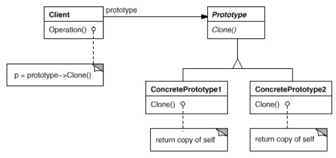

Création d'objets par clonage
Présentation
Cas d'utilisation de ce pattern :- La création, composition et représentation des objets doivent être cachées au client.
- La classe des objets à créer n'est connue qu'à l'exécution.
- La création d'objet est complexe, et on veut cacher cette complexité au client.
- La création d'un objet coûte cher, et il est plus efficace de cloner un objet.
L'interface prototype fournit une méthode
clone(), que les classes qu'on a besoin de cloner implémentent.

En général, pour permettre au client de cloner simplement les objets, on utilise une classe (par ex appelée Factory, Pool ou Registry) qui maintient une map associant un id au type d'objet à créer.
Exercice : Compilez et exécutez PrototypeDemo1.java.
Quel est l'inconvénient de ce type d'implémentation ?
Quelles solutions mettre en place pour y remédier ?
Quel est l'inconvénient de ce type d'implémentation ?
Quelles solutions mettre en place pour y remédier ?
Remarques
Abstract factory pourrait stocker un ensemble de prototypes utilisés pour cloner et fabriquer des objets produit.Les designs utilisant Composite et Decorator peuvent aussi utiliser Prototype.
Exemple du labyrinthe
L'implémentation créé une Abstract Factory qui utilise Prototype au lieu de Factory Method.Le code se trouve dans ce répertoire.
public class MazeGame{
public Maze createMaze(MazePrototypeFactory factory){
Maze aMaze = factory.makeMaze();
Room r1 = factory.makeRoom(1);
Room r2 = factory.makeRoom(2);
Door aDoor = factory.makeDoor(r1, r2);
aMaze.addRoom(r1);
// ...
return aMaze;
}
}
public class MazePrototypeFactory{
protected Maze mazeProto;
protected Wall wallProto;
protected Room roomProto;
protected Door doorProto;
public MazePrototypeFactory(){
this.mazeProto = new Maze();
this.wallProto = new Wall();
this.roomProto = new Room(0);
this.doorProto = new Door(null, null);
}
public Maze makeMaze(){
return mazeProto.clone();
}
public Room makeRoom(int n){
Room result = roomProto.clone();
result.setRoomNb(n);
return result;
}
public Wall makeWall(){
return wallProto.clone();
}
public Door makeDoor(Room r1, Room r2){
Door result = doorProto.clone();
result.setRooms(r1, r2);
return result;
}
}
public class EnchantedMazePrototypeFactory extends MazePrototypeFactory {
protected EnchantedRoom roomProto;
protected DoorNeedingSpell doorProto;
public EnchantedMazePrototypeFactory(){
this.roomProto = new EnchantedRoom(0);
this.doorProto = new DoorNeedingSpell(null, null);
}
}
public class BombedMazePrototypeFactory extends MazePrototypeFactory {
protected BombedWall wallProto;
protected RoomWithBomb roomProto;
public BombedMazePrototypeFactory(){
this.wallProto = new BombedWall();
this.roomProto = new RoomWithBomb(0);
}
}
private static void test_prototype(){
var mazeGame = new maze.patterns.prototype.MazeGame();
Maze maze;
// 1ere utilisation - jeu standard
var factory1 = new maze.patterns.prototype.MazePrototypeFactory();
maze = mazeGame.createMaze(factory1);
// 2e utilisation - enchanted
var factory2 = new maze.patterns.prototype.EnchantedMazePrototypeFactory();
maze = mazeGame.createMaze(factory2);
// 3e utilisation - bombed
var factory3 = new maze.patterns.prototype.BombedMazePrototypeFactory();
maze = mazeGame.createMaze(factory3);
}